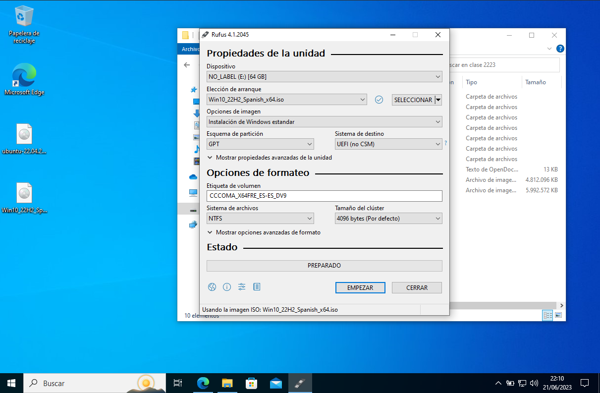

Para realizar las copias remotas usaremos el programa Clonezilla, una distribución de linux cuya finalidad es gestionar copias de seguridad.
Pero antes, ¿Qué es una copia remota? Pues es una copia realizada desde el origen a un dispositivo conectado o situado en otro ordenador, preferiblemente si está en la misma red para facilitar el trabajo.
Para realizar esta copia utilizaremos el método SSH, aunque hay otros como conectar el PC de origen a un servidor que será el destino o usar otros protocolos diferentes. Pero de todos, el más sencillo es SSH.
Ahora que sabemos esto, procedamos con el manual.
El paso previo no podía ser otro que crear el medio de instalación, obviamente. Si usamos Windows usaremos la aplicación rufus. Tendremos que tener un resultado similar al siguiente, pero con la diferencia de que en lugar de la iso de windows usaremos la iso de clonezilla. En dispositivo seleccionamos el USB a montar.
Primero arrancamos Clonezilla. Para ello enchufamos el USB, reinciamos la máquina y pulsamos la tecla que permite seleccionar el arranque, normalmente F2, F8 o F9, pero para estar más seguros siempre puedes pulsar ESC y acceder desde la BIOS/UEFI.
Ahora, seleccionamos la opción por defecto, la primera de todas. Después nos preguntará el idioma y la distribución del teclado. Son pasos sencillos, pero tediosos. Elegiremos el idioma que prefiramos y en cuanto a la distribución pulsaremos más habitualmente Change, ya que la distribución por defecto es el teclado americano.

En mi caso, que uso un portátil antiguo y quiero poner la distribución de teclado en español de España genérico, dejaré el teclado de PC genérico que tiene seleccionado al princpio, y en la siguiente ventana pulsaré Otro abajo del todo, ahora buscaré Español, lo seleccionaré y luego seleccionaré la distribución española que quiera.

A continuación nos pedirá sustitutos de teclas. Si no tenemos en el teclado la tecla que pide, buscaremos una alternativa de entre las opciones que nos da, y si la tenemos pues seleccionamos esa misma tecla, ya que aparece entre las opciones.

Cuando acabemos con eso, nos dará la opción de entrar a Clonezilla, que es el modo gráfico, o hacer el proceso mediante comandos. Lo segundo sería la mejor opción, pero ya que no tenemos los conocimientos adecuados, iremos a Start_Clonezilla.
Ahora en la siguiente ventana nos salen muchas opciones. Son para elegir lo que queremos hacer. Ya que queremos hacer una copia del disco en otro disco distinto, aunque esté en otra máquina, elegiremos device-image.
Ya que queremos hacer la copia en remoto, es decir, del disco duro de nuestro PC a otro lugar en otra máquina, una carpeta del escritorio en mi caso (aunque bien podría ser un disco duro dedicado para ello en ese PC), la opción será ssh_server.
Nos pedirá ahora la IP del destino. La introducimos.
Ahora nos solicita el puerto. Dejamos el que viene indicado por defecto (22).
A continuación nos pide un usuario que tenga permiso de escritura en el directorio de destino, que indicaremos en el siguiente paso. Es recomendable que ese usuario sea el administrador del equipo de destino. En mi caso es usuario.

Ahora nos preguntará en qué directorio del equipo de destino colocar la copia. Seleccionaré una carpeta del esritorio creado específicamente para ello.
Por último antes de mandarnos al siguiente paso, las opciones de la copia, nos pedirá confirmación (escribir yes) y la contraseña del usuario indicado en el destino.
En esta ventana elegiremos el modo Begginer ya que no necesitamos en este caso las opciones de un usuario avanzado. En la siguiente ventana elegiremos savedisk para guardar TODO el disco, y le ponemos nombre a la copia.
Como vemos he dejado el nombre por defecto a la copia: la fecha actual. NO HAGÁIS ESTO. Yo lo hago porque realmente no me importa el nombre de la copia para este ejemplo, pero cuando la hagáis además de la fecha es recomendable incluir más detalles, tales como a qué disco está copiando.
Ahora elegimos la unidad a copiar. Como ya viene marcada con el asterisco, pulsaremos tab y aceptar para pasar a la siguiente página.

Ahora nos pedirá qué tipo de compresión usar. NO CAMBIAREMOS NADA. Pulsamos intro y pasamos a la siguiente
Nos preguntará si queremos comprobar el disco que se va a copiar. Yo elegiré que no por velocidad.

Luego, nos pregunta si queremos comprobar la imagen, es decir, la copia realizada. Voy a elegir también que no. Tras ello si queremos si cifrar la imagen. También elijo que no.
Por último, nos pregunta qué hacer tras la copia. Elijo la opción de que me dé a elegir después.

Ahora comenzará la copia. Llevará un buen rato.
Cuando acabe, nos preguntará qué hacer a continuación, como antes indicamos.
¡Y listo! Hemos terminado la copia.